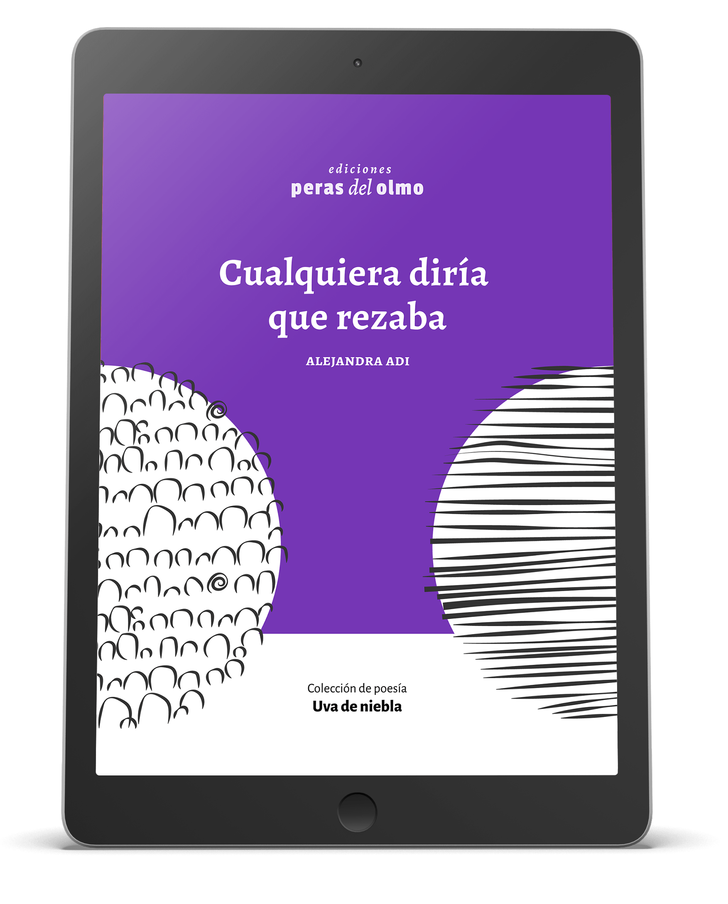

Cualquiera diría que rezaba
En Cualquiera diría que rezaba, Alejandra Adi coquetea
con lo sagrado, concibe a la fe como un acto provocador, en un movimiento
más del cuerpo que de la mente. La escritora y comunicadora advierte que
la verdad, a veces, es lo que se refleja en la cara platinada de un cuchillo
listo para usarse. En su voz hay rastros del oficio de cronista. Una prosa
insolente para describir lo que pasa y no nos animamos a nombrar.